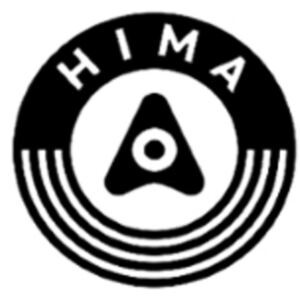

Trade Mark Journal No.2025/034 22 August 2025
WO0000001856196 (9,12,37)
Office of origin: China
Date of International Registration:24 January 2025
Date of designation in the UK:
24 January 2025

- Class 9
- Computer software applications, downloadable; computers; downloadable software applications for mobile phones; tablet computers; computer peripheral devices; parking meters; scales with body mass analysers; scales; flashing lights [luminous signals]; global positioning system [GPS] apparatus; smartphones; earphones; smart speakers; projection screens; cameras [photography]; steering apparatus, automatic, for vehicles; measuring apparatus; speed checking apparatus for vehicles; materials for electricity mains [wires, cables]; electric wire harnesses for automobiles; video screens; electronic chips; electronic key fobs being remote control apparatus; theft prevention installations, electric; sunglasses; accumulators, electric, for vehicles; battery chargers; charging stations for electric vehicles.
- Class 12
- Self-generating electric locomotives [diesel-electric locomotives]; remote control vehicles, other than toys; electric vehicles; driverless cars; gearboxes for motor cars; windscreen wipers for motor cars; electric cars; automobile dashboards; doors for automobiles; anti-theft devices for vehicles; hydraulic circuits for motor cars; clutch mechanisms for motor cars; gasoline engines for land vehicles; automobile wheels; window rain guards for cars; reversing alarms for vehicles; hybrid cars; engines for land vehicles; automobiles; electrically powered scooters; mopeds; self-balancing electric unicycles; push scooters [vehicles]; self-balancing two-wheeled electric scooters; self balancing unicycles; bicycles; self-balancing scooters; electric unicycles; electric wheelchairs; repair outfits for inner tubes; tires for vehicle wheels; drones with aerial photography feature; camera drones; brakes for vehicles; upholstery for vehicles; vehicle chassis; seat covers for vehicles; anti-theft alarms for vehicles; air pumps [vehicle accessories]; safety seats for children, for vehicles; steering wheels for vehicles.
- Class 37
- Providing information relating to repairs; rebuilding machines that have been worn or partially destroyed; installation, maintenance and repair of computer hardware; electric appliance installation and repair; machinery installation, maintenance and repair; motor vehicle maintenance and repair; vehicle service stations [refuelling and maintenance]; vehicle cleaning; vehicle battery charging; rubber tire repair.
Huawei Technologies Co., Ltd.
Representative: Unitalen Attorneys At Law, Room 30703, 7th Floor, Scitech Place, , No.22 Jian Guo Men Wai Ave., , 100004 Chaoyang District, Beijing, CHINA